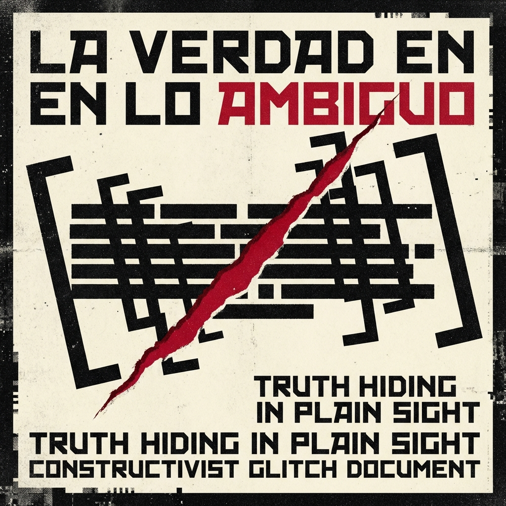
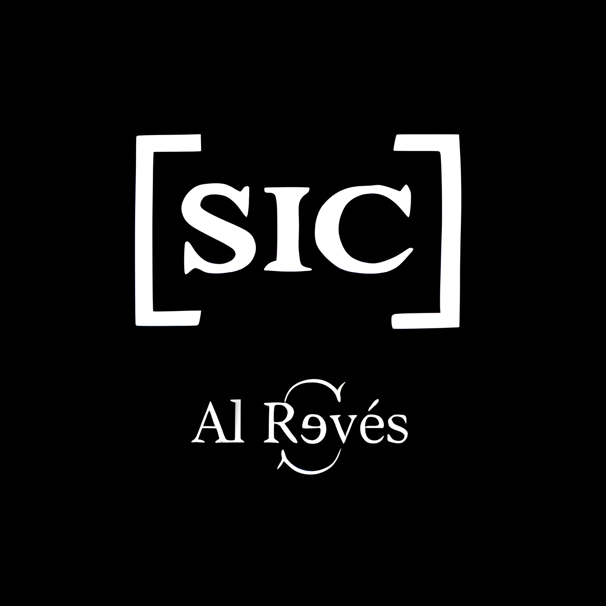
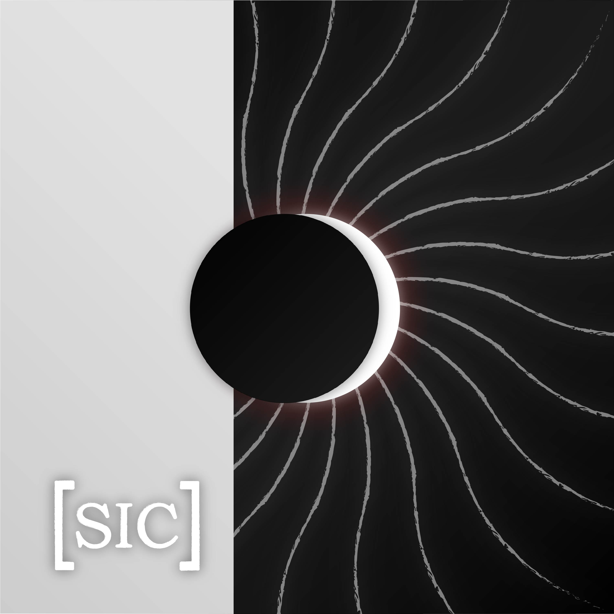
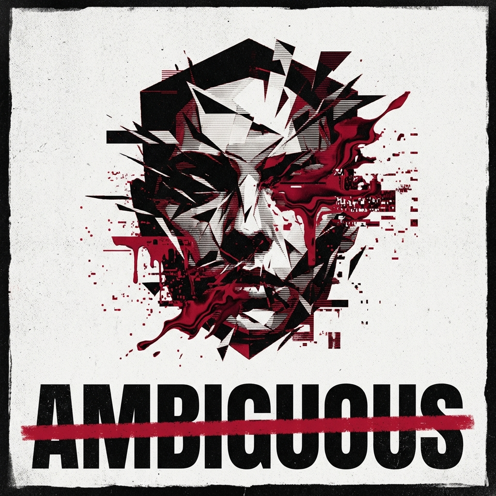
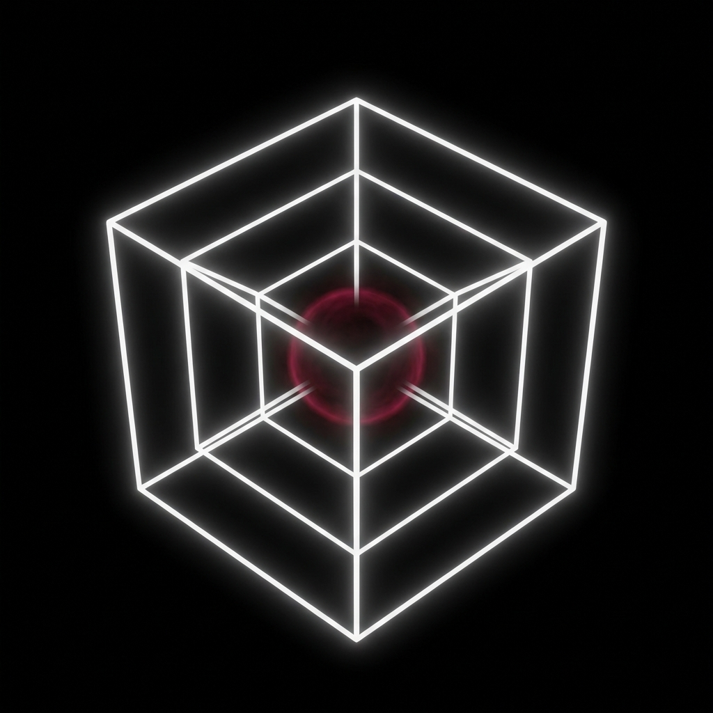
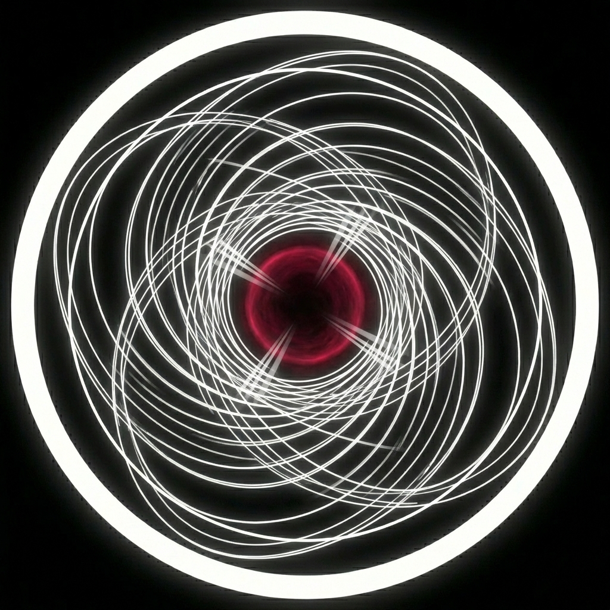
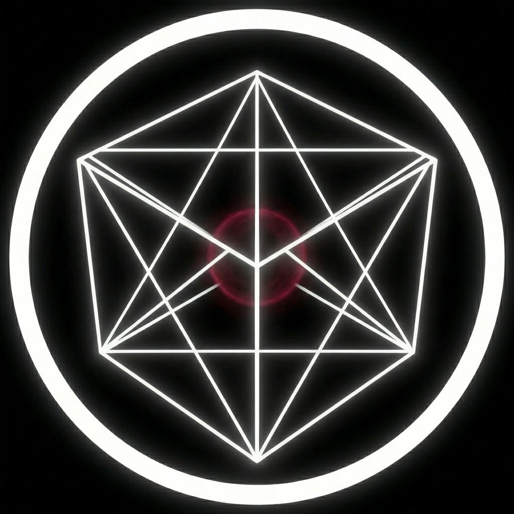

Sentence In Conflict
Así fue escrito. Así se quiebra.
Rock alternativo, grunge y fusión desde la tensión entre idea y materia. No ilustramos conceptos. Los sometemos a fricción hasta que se vuelven sonido.

Pereira / 2017 →
Manifiesto
No simplificamos la contradicción. La habitamos.
[SIC] proviene de sic erat scriptum — "así fue escrito" — y se lee también como Sentence In Conflict. La banda habita lo indeterminado, lo abstracto y lo visceral. No cuenta historias: abre preguntas, expone grietas y convierte conceptos en impacto clasificado sonoro.
"La música es pensamiento encarnado: cerebral en intención, física en ejecución."
Cada punto de contacto con [SIC] debe sentirse intenso, reflexivo e inquietante. Más cerca de un manifiesto que de una pieza promocional.
Idea / Materia
Lo conceptual toma peso físico.
Razón / Emoción
La claridad entra en disputa con la herida.
Orden / Caos
La estructura existe para soportar el quiebre.
Luz / Sombra
La verdad aparece en el borde.
Indeterminación
No hay verdades absolutas. Lo importante no es cerrar el sentido, sino sostener la pregunta.
Ambigüedad
Las cosas significan varias cosas al mismo tiempo. La ambigüedad no debilita: densifica.
Ideas
La canción no es fondo. Es postura, conflicto y materia pensante.
Tensión
La identidad no opera desde neutralidad. Necesita contraste duro y cortes bruscos.
Núcleo
El conflicto no es un tema. Es la forma.
El territorio conceptual de [SIC] es el mundo de las ideas y el conflicto semántico. La banda opera desde contrastes fuertes y convierte lo abstracto en impacto físico sin sacrificar ambigüedad.
sic erat scriptum / Sentence In Conflict
[SIC] habita la tensión entre idea y materia, razón y emoción, orden y caos, claridad y ambigüedad. No busca cerrar una verdad única; sostiene la pregunta.
El filósofo abstracto
- Piensa en lo intangible y lo vuelve materia sonora.
- No simplifica la contradicción; la habita.
- Encuentra belleza en lo no resuelto.
Intenso. Reflexivo. Deliberado.
- Cada pieza debe sentirse inquietante y contundente.
- La identidad evita neutralidad tibia y ornamento gratuito.
- La música funciona como pensamiento encarnado.
Sistema
Cómo piensa. Cómo habla. Cómo se ve.
La identidad de [SIC] no vive solo en el sonido. También se reconoce en una voz editorial precisa y en un sistema visual de alto contraste, hostil y contenido.
Enigmática, cerebral, contundente.
- Sugiere más de lo que explica y evita el tono promocional genérico.
- Usa frases densas, imágenes abstractas y contradicciones deliberadas.
- Campos semánticos: idea, conflicto, forma, ruido, herida, verdad, sombra, pulso, grieta.
Alto contraste editorial.
- Negro y blanco como base dominante. Rojo visceral como acento escaso y táctico.
- Bordes rectos, retículas rígidas, espacio negativo y cortes bruscos.
- Texturas controladas, ruido fino y tratamiento de imagen bitonal o en escala de grises.
Restricción antes que ornamento.
Negro absoluto
#0A0A0A
#0A0A0A
Blanco crudo
#F5F5F5
#F5F5F5
Rojo visceral
#D21F3C
#D21F3C
Syncopate / titulares y frases de alto impacto
Audiowide / labels técnicos y tono de laboratorio
Orbitron / cuerpo, navegación e interfaz
Cuando el texto se vuelve obvio, la sombra devuelve densidad y resonancia.
La estructura existe, pero su valor aparece cuando soporta la fractura.
La idea no se presenta limpia: entra en contacto con lo físico y deja marca.
La lectura debe ser clara en postura, pero no cerrada en significado.
Discografía
Fases del conflicto.

Al Revés
Primer gesto de inversión.

Desde que el sol brilla
Claridad atravesada por herida.

MSS WHITE
La sombra se vuelve archivo.

Así
Golpe directo. Sin anestesia.

Foco actual
Ambiguous
Verdad en disputa.
La fase que condensa el núcleo actual de [SIC]: archivo intervenido, conflicto semántico y pulso al borde del quiebre.
La triada
Tres funciones. Un mismo pulso.

SIC-01 / Voz + Guitarra
Daniel Castañeda
Activo
El arquitecto
Construye la forma antes del golpe. Lleva las ideas al borde donde empiezan a sonar como una herida precisa.

SIC-02 / Batería
Juan Pablo Hurtado
Activo
El motor
Convierte la tensión en pulso. La fricción adquiere velocidad, peso y amenaza en su terreno.

SIC-03 / Bajo
Francisco Valencia
Activo
La base
Le da masa a lo abstracto. La superficie donde el concepto deja de ser idea y se vuelve impacto físico.
The Mental Laboratory
Otra capa del mismo conflicto.
El universo [SIC] se extiende a un espacio experimental: física, audio, lógica y confrontación con la propia imagen. No es una página aparte. Es el laboratorio mental.
Visuales y física
Las palabras se comportan como materia. Colisión, textura, scanlines y distorsión.
Audio y sintonía
Radio de onda corta. Ruido, señal y manifiesto se cruzan según la frecuencia.
Lógica e interacción
Terminal y filtros de verdad. La máquina contesta sin entregar una salida limpia.
Hardware y realidad
La cámara como espejo de dualidad. Alto contraste, rastro fantasma, presencia intervenida.
Señal
Si la conversación vale la pena, la señal se abre.
Prensa, booking, colaboraciones editoriales y apariciones en vivo. La entrada no se plantea como promoción genérica, sino como una extensión del mismo sistema conceptual.
-
Email
sic.rockband@gmail.com -
Teléfono
+57 316 822 8662 -
Instagram
@sic.band -
YouTube
Canal oficial -
Escucha
Último lanzamiento en Spotify